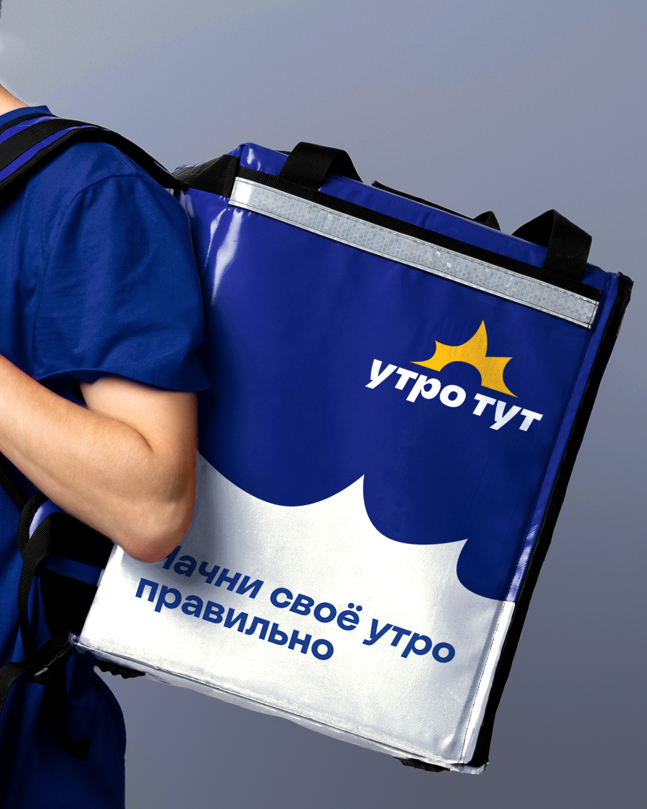
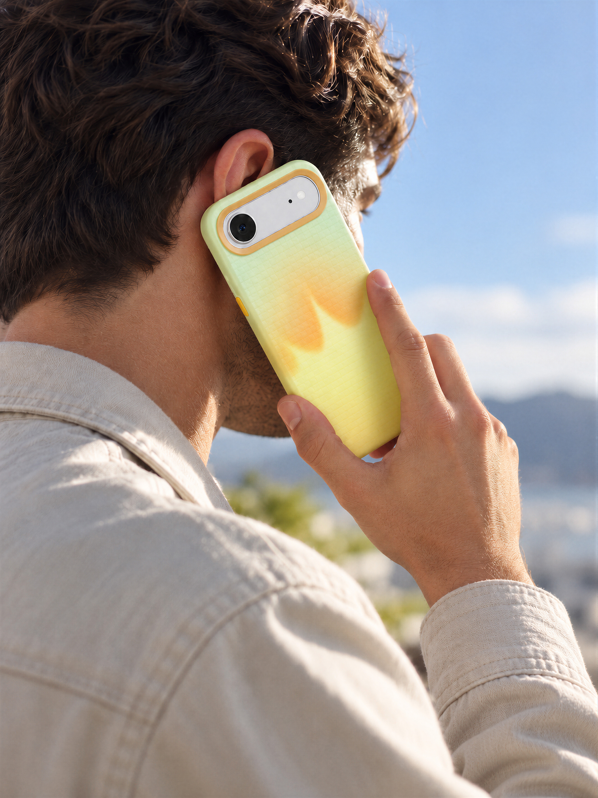
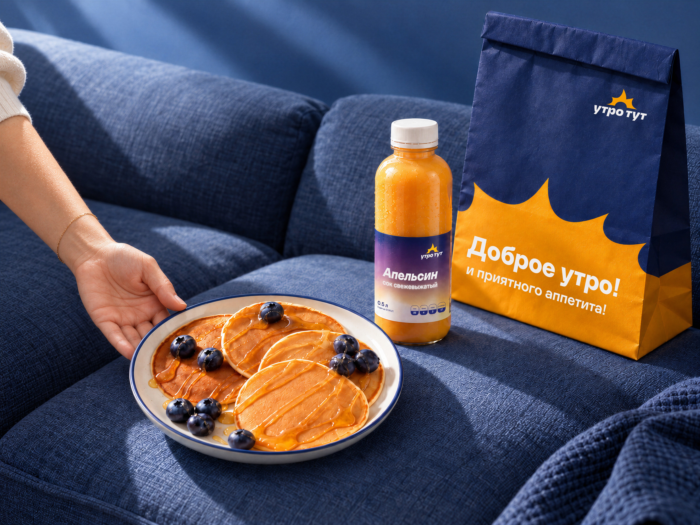
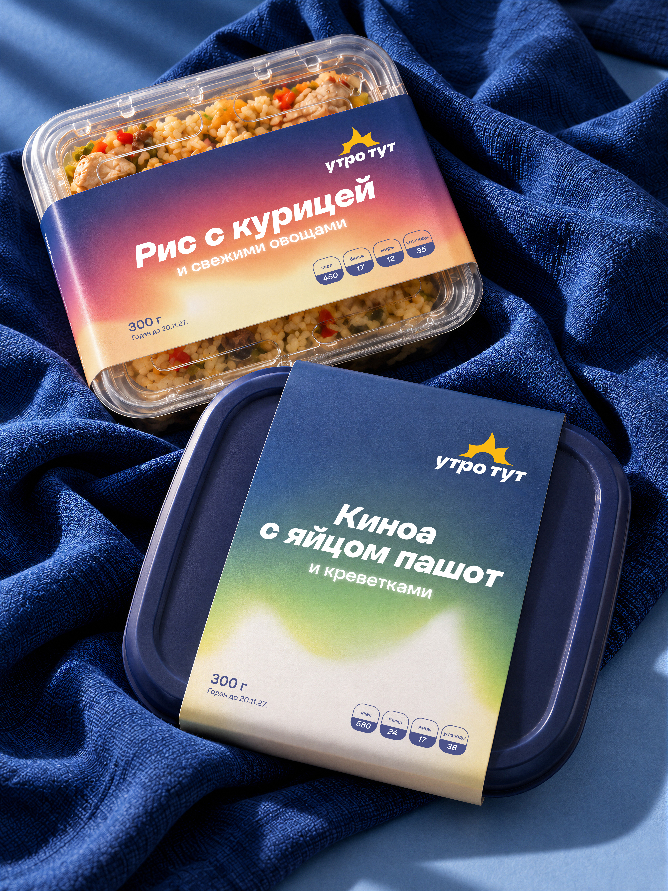
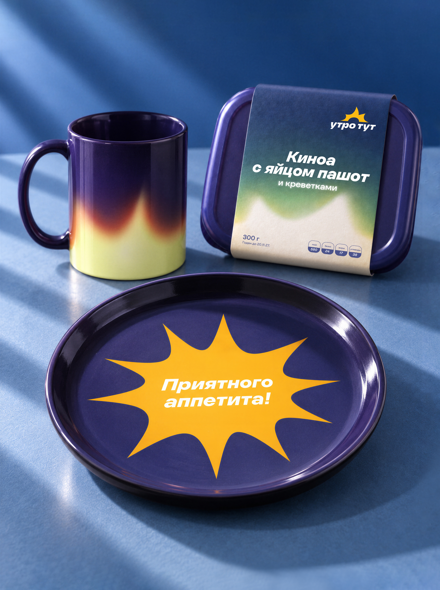
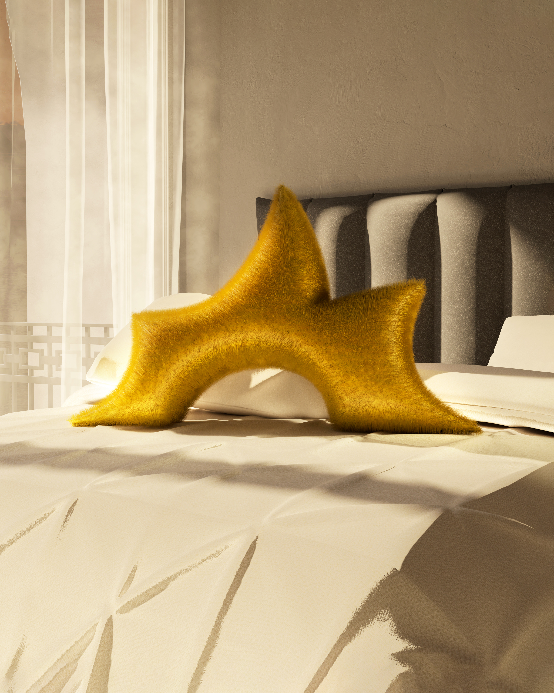
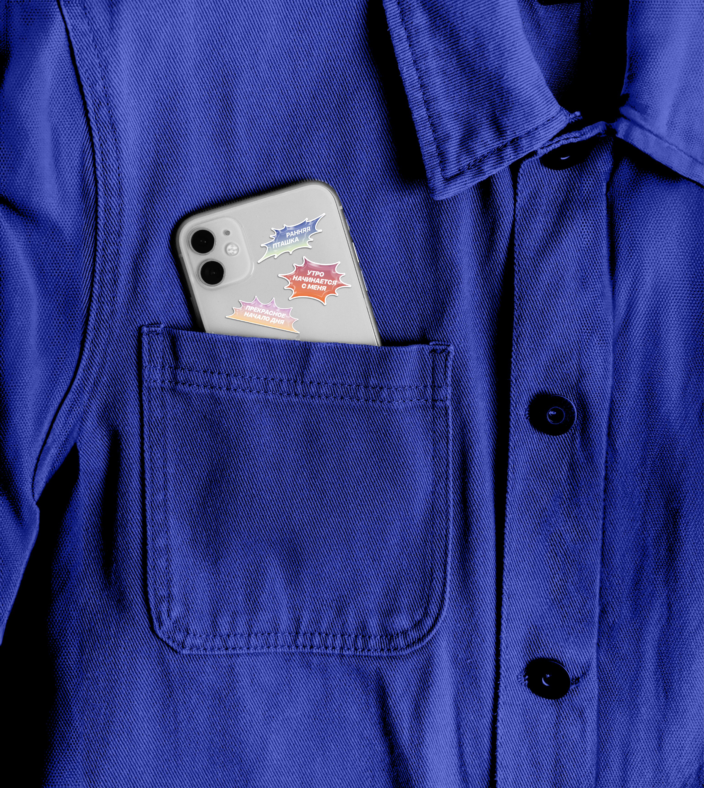
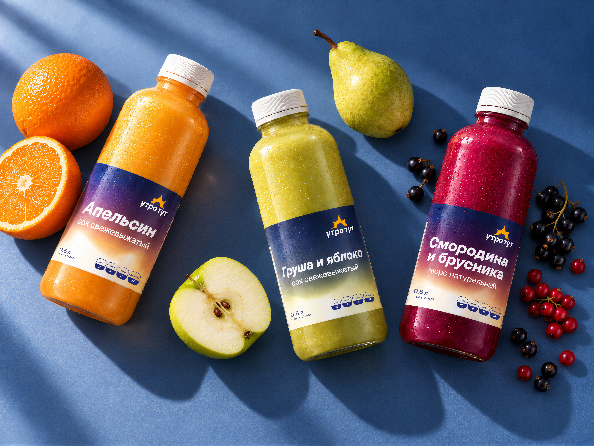
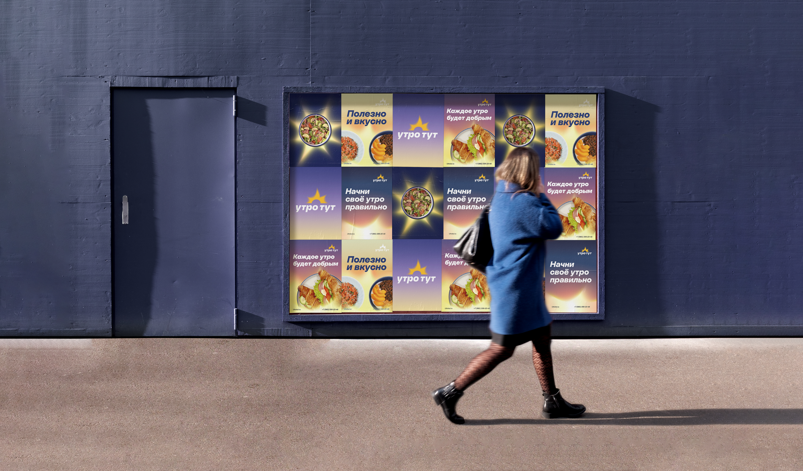

Утро тут
“Утро тут” — сервис доставки готовых завтраков, который помогает освободить время для себя и начать день без лишних забот. Анализ рынка показал, что большинство сервисов доставки делают акцент на разнообразии ассортимента. Вместо конкуренции за количество предлагаемых блюд в основу проекта легла идея специализации на завтраках.
Утро — время, когда ценится каждая свободная минута. Поэтому главная задача сервиса — не просто доставить еду, а сделать начало дня проще и приятнее.
Название отражает эту идею: вместе с завтраком к человеку приходит ощущение нового дня. Надпись на упаковке становится своеобразным приветствием, сообщающим, что утро уже здесь.



Главным визуальным образом стало восходящее солнце — символ пробуждения, энергии и начала нового дня.
Эта идея получила продолжение в фирменной графике. Лучи могут менять длину, ширину и количество, становиться чёткими и размытыми. Цветовая палитра строится на контрасте тёмно-синего и жёлтого — предрассветного неба и первых солнечных лучей. Подчёркивают её градиенты, передающие разные состояния рассвета.






.jpg)


